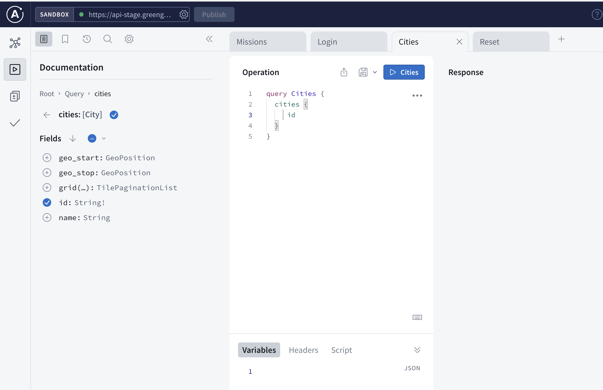

Greengage APP API
Introduction:
The greengage app api is mesh of multiple services which are provided via a single gateway. This underlying docuemntation will show you in a simple way how you can interact with application and how you can adopt your application to fit in the ecosystem.
Endpoints
Staging:
https://api-stage.greengage.dev/graphql
Prouction (available January 2024):
https://api.greengage.dev/graphql
Datastudio
The endpoints always a control-panel under /cp which allows you open the complete documenation of the active connected services
eg. https://api-stage.greengage.dev/cp
Technology
Due to the fact that the (micro-)services are made accessable via the Apollo Server the location, storage of each service is masked by the gateway.
GraphQL
GraphQL is like a superhero of data query languages, swooping in to save the day for developers tired of over-fetching or under-fetching data. Created by Facebook, this query language provides a more efficient and flexible alternative to traditional REST APIs. With GraphQL, you get to specify exactly what data you need, and you'll receive it in a neat JSON package, eliminating the excess baggage of unnecessary information. It's like ordering a customized pizza instead of settling for a pre-made slice—you get exactly what you asked for, and nothing more.
GraphQL provides various type of interactions but the most important are - queries - mutations
Queries
To get data out of the API you make a "query". The datastudio can help you write meaningful queries and helps you find out what the services can do, without you knowing anything about the location or the queries.

Example:
query Cities {
cities {
id
name
}
}
Mutations
Mutations on the other hand are the WRITE/UPDATE/DELETE operations. Or in simple terms every time you send data to the service which should taken care of.
Example: ```graphql mutation RegisterAccount { register(data:{ email:"mpi@sushi.ev" }) { token refresh_token } } ``````
For an overview of all the current data sets and mutations please vistit api-stage.greengage.dev where you can find the complete schema and the interactive documentation.
Examples for useage or integratoin
An example to provide a restful api via graphql endpoint can be seen here. The link includes a demo implementation and can be used for further useages.
For a client side approach to use the graphql endpoint please follow this link.
Integration
If you want to be integrated into the greengage api or need further support please send an email to support@sushi.dev